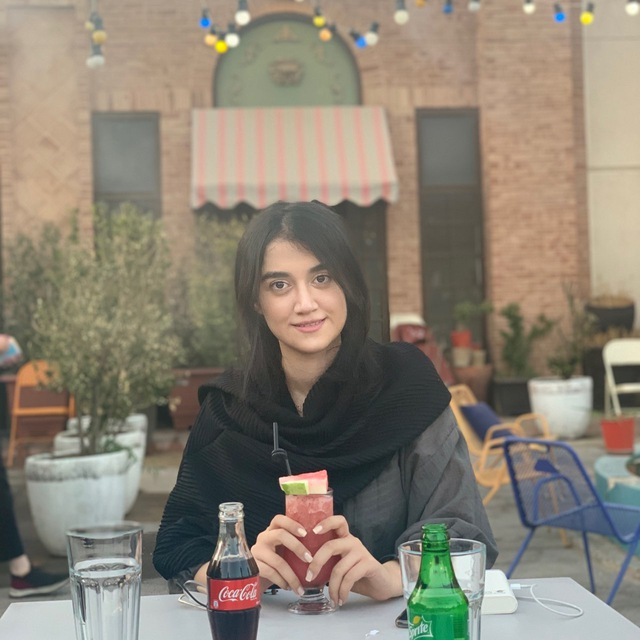

About Me
Hi! I am Sara Tavakoli, a B.Sc. Computer Engineering student at the University of Tehran.
I have been studying computer engineering, Software Engineering major, with a 4/4 GPA in the last two years.
As a research assistant, I worked with my supervisors on Topic Modelling of Persian Tweets to assess people's inclination towards specific social issues during COVID-19. I am currently working on the preparation of our manuscript. Moreover, I am going to employ my knowledge of Topic Modelling in my dissertation.
During my education, I have become familiar with different aspects of machine learning and software engineering and conducted several projects in which I had to solve practical problems using multiple programming languages and tools.
These experiences provided me with insight for my future and intrigued me to learn more about Machine Learning and Artificial Intelligence and Natural Language Processing.
While I was working as a Software Engineer at Digikala and Divar companies, I developed software solutions by studying information needs, conferring with users, and studying systems flow, data usage, and work processes. In the meantime, I chose software-related modules in my university study course to leverage my learned skills in my workplace as well.
So I build interest in Software Engineering and Software Testing.